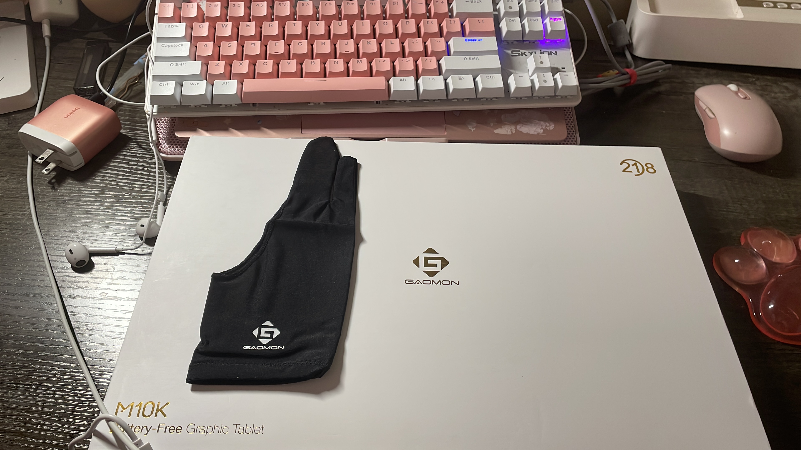
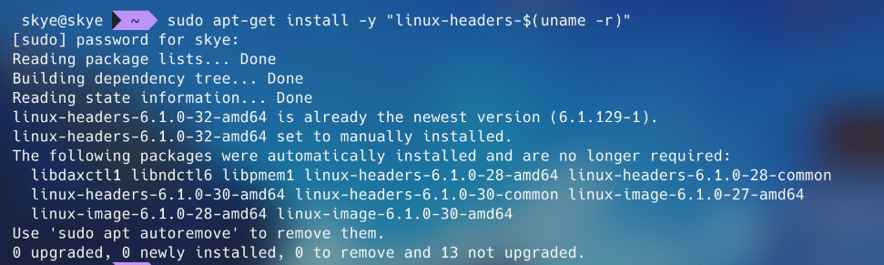
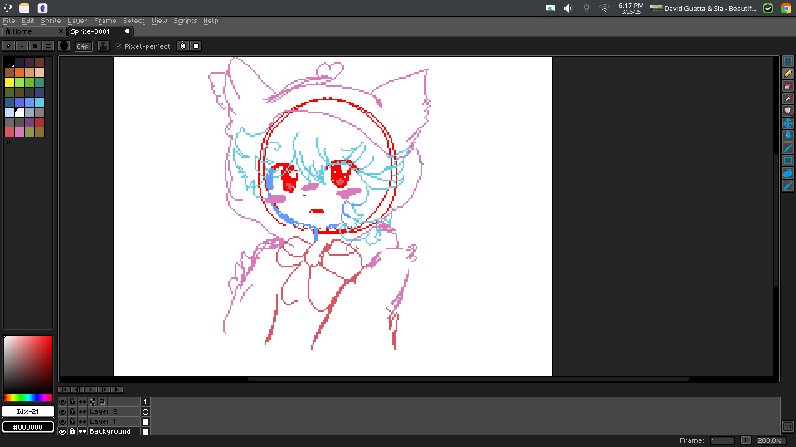
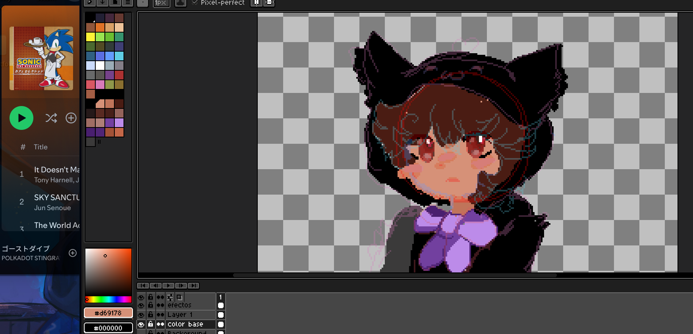

My first graphics tablet, finally! Now what?
Today, March 25th, I got my first graphics tablet! I'm super excited about it, though at first, I was worried it wouldn’t work on my Debian system because of the drivers. I got a GAOMON M10K, and honestly, I didn’t expect it to be this big! It even came with gloves and a few other nice extras.
Yes, you can use a Gaomon M10K on Linux! While Gaomon doesn’t officially provide Linux drivers, you can get it working with the DIGImend project driver and tools like xsetwacom for setup and configuration. I was so excited that I didn’t even bother configuring it properly—I just installed the drivers, which was super easy!

Install & Setup on Debian

If your distribution doesn’t have a recent enough packaged DIGImend driver, you can grab a newer version on GitHub. There’s a Debian package available, but if your OS isn’t Debian-based, you can compile the source code instead. It’s not too complicated and is well-documented!
In my case, I just ran this line in my terminal before restarting my computer and starting to draw!
Setting it up was even easier. First, I ran lsusb to get the tablet's ID. Mine showed up as Bus 001 Device 013: ID 256c:006f GAOMON Gaomon Tablet, and with that, I was able to configure it. This number should stay the same if you're using the M10K 2018 model, but sometimes brands release updated versions of their hardware, so it might vary slightly.
After that, we navigate (cd) to the directory where Xorg stores device rules. In my case, it’s located at /usr/share/X11/xorg.conf.d/, but keep in mind that this may vary depending on your Linux distribution. The DIGImend project installs its own rules, which can be found in the 50-digimend.conf file in this directory. I'll be editing this file (note that this requires your system's root password since we’re modifying a system file using sudo).
I'm using the "nano" text editor, but you can use whichever one you prefer. "Nano" is usually pre-installed on most distributions, though its keyboard shortcuts and syntax highlighting aren't the most user-friendly by default.
Section "InputClass"
Identifier "Gaomon tablets with Wacom driver"
MatchUSBID "256c:006f"
MatchDevicePath "/dev/input/event*"
Driver "wacom"
EndSection
Save and then reboot your system!
After that, I ran xsetwacom --list in the terminal. Now, we’ll create a script—a simple text file containing a series of commands that the computer will execute in order, with each line configuring a different aspect of your tablet. Lines starting with # are ignored by the computer, so I’ve added comments to guide you through customizing the script. Open a plain text editor (e.g., Micro, Kate, Geany, Gnome Text—also known as Nautilus) and copy/paste the script below.
#! /bin/bash
# Setup xsetwacom script for Intuos 3 9x12
# License: CC-0/Public-Domain license
# author: deevad
# Tablet definition
tabletstylus="GAOMON Gaomon Tablet stylus"
tabletpad="GAOMON Gaomon Tablet Pad pad"
touchpad="GAOMON Gaomon Tablet Touch Strip pad" #unsupported
dialpad="GAOMON Gaomon Tablet Dial pad" #unsupported
# Display all available option:
#xsetwacom get "$tabletstylus" all
#xsetwacom get "$tabletpad" all
#xsetwacom get "$touchpad" all
#xsetwacom get "$dialpad" all
# Reset
xsetwacom --set "$tabletstylus" ResetArea
# Map surface of the tablet to a monitor (in case of multiple)
# Note: get the name of the monitor with xrandr
xsetwacom --set "$tabletstylus" MapToOutput "DisplayPort-0"
# Auto proportional Mapping:
# xsetwacom get "$tabletstylus" Area
# default: 0 0 50800 31750
# Enter under the resolution of your monitor:
screenX=2560
screenY=1440
Xtabletmaxarea=50800
Ytabletmaxarea=31750
areaY=$(( $screenY * $Xtabletmaxarea / $screenX ))
xsetwacom --set "$tabletstylus" Area 0 0 "$Xtabletmaxarea" "$areaY"
# Stylus button:
#xsetwacom --set "$tabletstylus" Button 1 1 # default, to click and draw
#xsetwacom --set "$tabletstylus" Button 2 "key Control_L" # Ctrl = color picker
#xsetwacom --set "$tabletstylus" Button 3 3 # default (Right click)
# Tweaks
# Pressure curve:
xsetwacom --set "$tabletstylus" PressureCurve 0 0 100 100
# Softer
#xsetwacom --set "$tabletstylus" PressureCurve 0 10 40 85
# Configuration data trimming and suppression
# The event of this device are good; if you have CPU better to not filter
# them at operating system level to not loose any sensitivity.
# Minimal trimming is also good.
xsetwacom --set "$tabletstylus" Suppress 0 # data pt.s filtered, default is 2, 0-100
xsetwacom --set "$tabletstylus" RawSample 1 # data pt.s trimmed, default is 4, 1-20
# For left-handed mode (rotation):
#xsetwacom --set "$tabletstylus" Rotate half
# Buttons
# Note: touchpad around 10 button is not supported
# +-----+
# | 1 |
# +-----+
# | 2 |
# +-----+
# | 3 |
# +-----+
# | 8 |
# +-----+
# | 9 |
# +-----+
# +---+-----+---+
# | |
# | +-----+ |
# | | 10 | |
# | | | |
# | +-----+ |
# | |
# +---+-----+---+
# +-----+
# | 11 |
# +-----+
# | 12 |
# +-----+
# | 13 |
# +-----+
# | 14 |
# +-----+
# | 15 |
# +-----+
xsetwacom --set "$tabletpad" Button 1 "key Control_L" # Ctrl = color picker
xsetwacom --set "$tabletpad" Button 2 "key KP_Divide" # / = Switch to previous used brush preset
xsetwacom --set "$tabletpad" Button 3 "key Shift_L" # Shift = Resize brush
xsetwacom --set "$tabletpad" Button 8 "key v" # v = line
xsetwacom --set "$tabletpad" Button 9 "key m" # m = mirror
xsetwacom --set "$tabletpad" Button 10 "key e" # e = eraser
xsetwacom --set "$tabletpad" Button 11 "key r" # r = pick layer
xsetwacom --set "$tabletpad" Button 12 "key l" # l = select lighter color
xsetwacom --set "$tabletpad" Button 13 "key k" # k = select darker color
xsetwacom --set "$tabletpad" Button 14 "key o" # o = more opacity
xsetwacom --set "$tabletpad" Button 15 "key i" # i = less opacity
I found this script made by someone else. They commented the line for the buttons for the stylus (they start by "#" after "# Stylus button:"). Uncomment them to customize them. Many keys can be called by their X11 name. To find the main list of keys; I found them here in pastebin. After all of this, save it named Gaomon-M10K.sh (you can name it the way you want, and save it where you want on your disk; the only constrain is to finish with the extension .sh ). You can read it, and adjust it. To run it, after saving the file you need to give this text file execution permission. You can do so with many desktop environment by right clicking on the file, and add the "execute" permission. Another way to do it is with command line:
chmod +x Gaomon-M10K.sh ./Gaomon-M10K.sh
The script I gave you is simple made by Deevad, but there are some more complicated ones. user TwistyDev on Gitlab published a more advanced version based on xinput and a Python script. The script can switch profiles between blender and krita and has a systray icon! Here: GitLab of TwistyDev
Now, if all this seems difficult to you (and maybe you have a different tablet, and maybe you use the KDE Plasma Desktop Environment), well, in good time, I think there is a second method that is much easier, however, you would still have to install the drivers. The full featured module for the configuration of Graphic tablet isn't preinstalled by default. but you can quickly install it with:
Once done, you'll find the options in your Settings, under Device. With this interface, you can create profile, switch between profile with your keyboard, assign complex shortcuts to your stylus buttons, or buttons of the tablet and map the tablet on the display of your choice and in the geometry of your choice. You can even change the pressure curve and calibrate your stylus.
If your tablet is not supported, you can remove this module!
Final Thoughts
Okay, enough about complicated Linux stuff! Now I want to show you how beautiful this thing is. The tablet is very fluid and handles pen pressure well. I thought it would be difficult for me to use, but it turned out to be easier than I thought! My boyfriend is currently uploading videos in Spanish to YouTube, and I decided to make an animated sprite for him and give it to him. It's still a work in progress, but I hope to finish it soon when I have time.


I'm feeling excited about this. I feel like I can finally let my imagination run wild, and now I'm going to go wild with it lol. Anyway, thanks for reading! If you have any recommendations for drawing techniques in the comments, I'd be happy to read them. My sister is teaching me some tricks for drawing and making my own assets ^^

 Home
Home About
About Social
Social Support
Support Tos
Tos Tools
Tools Blog
Blog  Resources
Resources Software
Software Credits
Credits Workstation
Workstation Sitemap
Sitemap